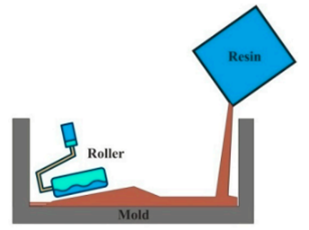
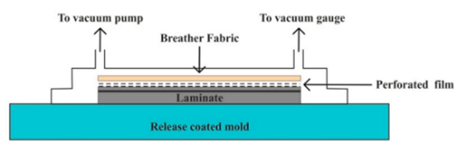
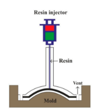

Izdelava polimernih kompozitov obsega izdelavo pripravljenih vlakenskih oblik in utrjevanje vlaken z matricami različnih materialov. Vlakenske oblike so narejene s pomočjo tehnik tekstilne industrije razložene v zavihku Anizotropija(Rajak idr., 2019)
Ročna tehnika
Ročna tehnika je najbolj razširjena tehnika izdelave kompozitov. Vlaknenske oblike so položene v kalup, nato je matrica vlita ali nanešena s čopičem na vlakna. Z valjem matrico vtremo v vlakna, da zagotovimo med sloji vlaken. Podobna tehnika je skoraj identične, le da se matrico nanese s pomočjo škropilne pištole.(Rajak idr., 2019)
Kalupiranje
Kalupiranje z vakuumsko vrečo uporablja fleksibilen sloj materiala(ponavadi najlon polietieln ali polivinil alkohol(PVA)), da obdaja in tesni del pred zunanjim zrakom, nato se v delu med slojem in kalupom izčrpa z vakuumsko črpalko.(Rajak idr., 2019)
Ta postopek eliminira možnosti vidne poroznosti in nepravilne impregnacije, kar poveča odpornost na strižne obremenitve za 15-18%. Matrico se lahko nanaša z ročno tehniko ali z injektorjem.(Rajak idr., 2019)
Pultruzija
Pultruzija je proces pri katerem so kontinuirana vlakna vlečena skozi matrično kopel, ki so nadaljnjo okrepljena s segreto matrico. Na koncu procesa je kontinuirana plošča kompozita razrezana na ustrezne velikosti. Ta proces je nenehen z visoko stopnjo avtomatizacije in znižjo ceno izdelave. Omogoča izdelavo kompozitov z neprekinjenim prerezom dolgih dolžin.(Rajak idr., 2019)